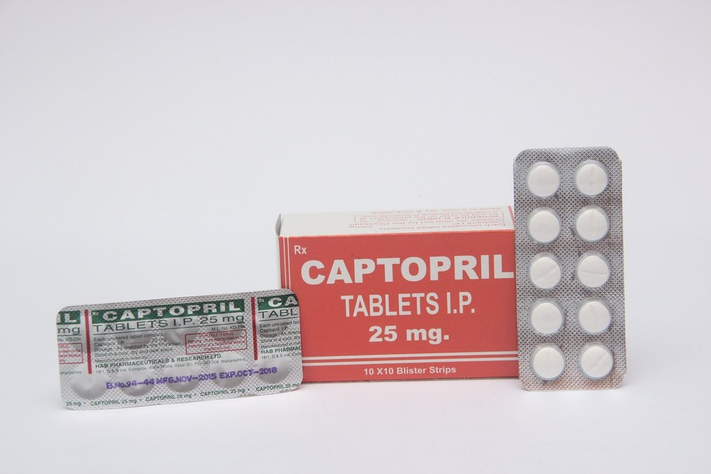
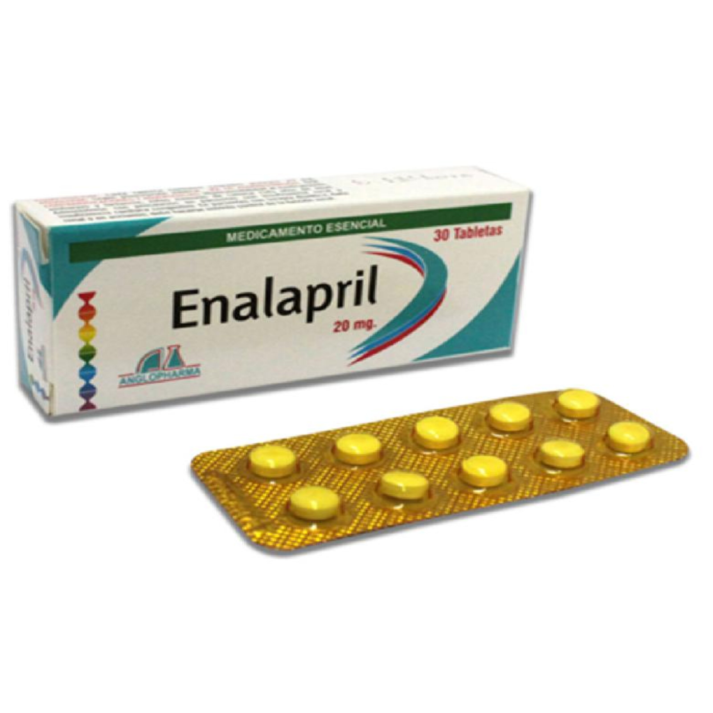
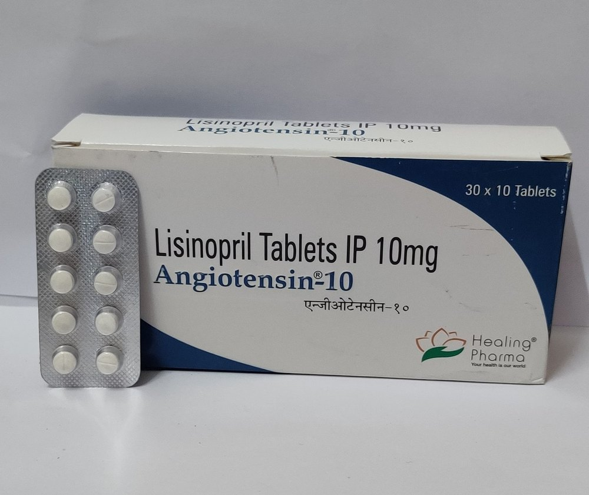
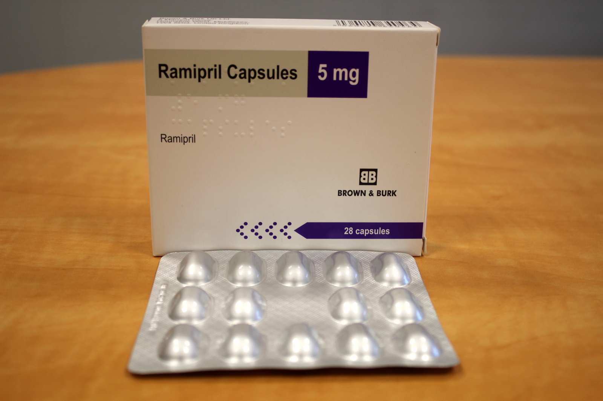

Apa Itu ACE Inhibitor?
ACE inhibitor adalah obat yang digunakan untuk membantu menurunkan tekanan darah. Obat ini juga membantu melindungi jantung dan ginjal agar tetap sehat.
Cara kerjanya:
- Membantu pembuluh darah tetap rileks dan tidak terlalu kencang.
- Membuat aliran darah lebih lancar sehingga tekanan darah turun.
- Membantu jantung dan ginjal bekerja lebih ringan dan aman.
Contoh Obat ACE Inhibitor

Captopril

Enalapril

Lisinopril

Ramipril
Indikasi Pada Lansia
Tekanan darah tinggi (hipertensi)
Obat ini membantu menurunkan tekanan darah agar jantung dan pembuluh darah tetap sehat. Obat ini sangat berguna terutama bagi lansia yang juga memiliki diabetes atau masalah ginjal.
Diabetes
Obat ini membantu melindungi ginjal agar tetap bekerja dengan baik dan memperlambat kerusakan akibat diabetes.
Gagal jantung
ACE inhibitor membantu jantung bekerja lebih ringan, sehingga mengurangi risiko harus dirawat di rumah sakit dan membantu meningkatkan harapan hidup.
Penyakit ginjal
Obat ini membantu menjaga ginjal tetap sehat dan memperlambat kerusakan lebih lanjut.